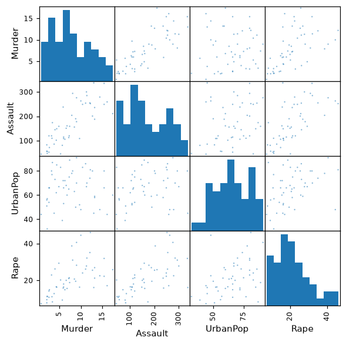
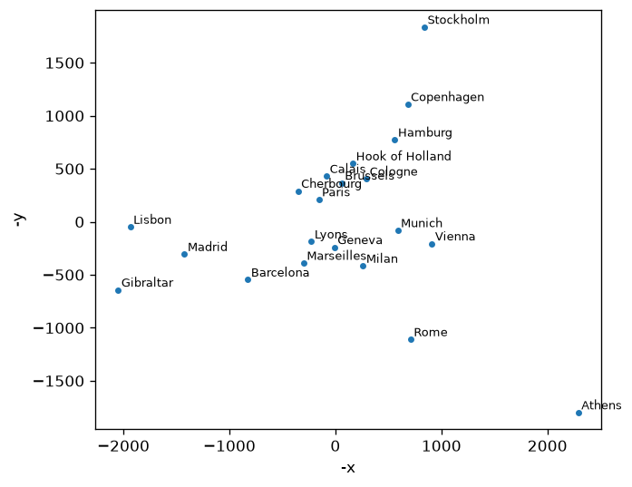
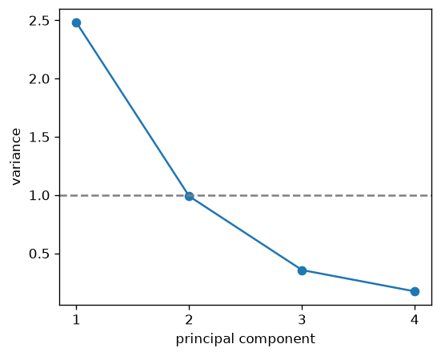
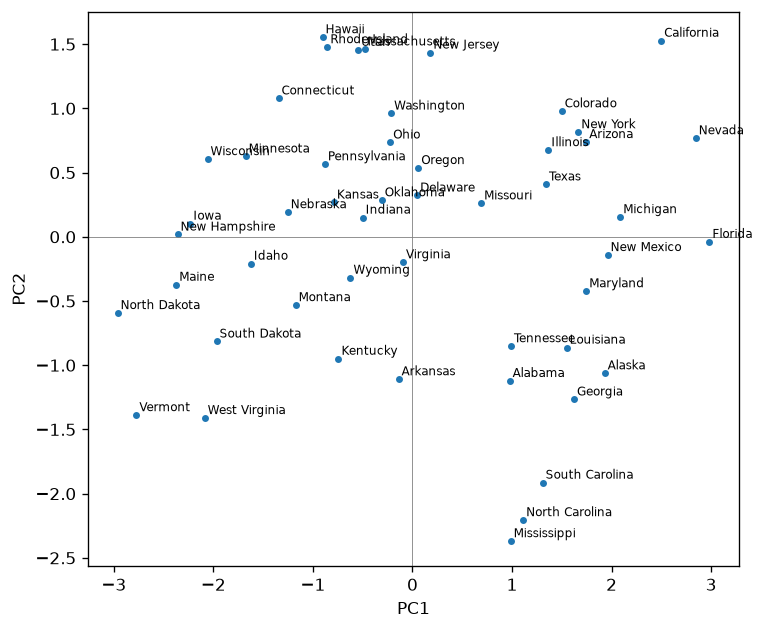
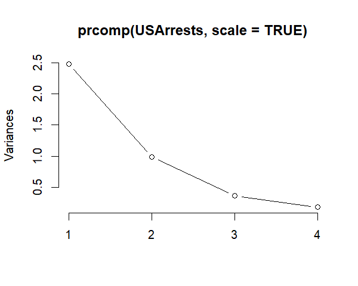
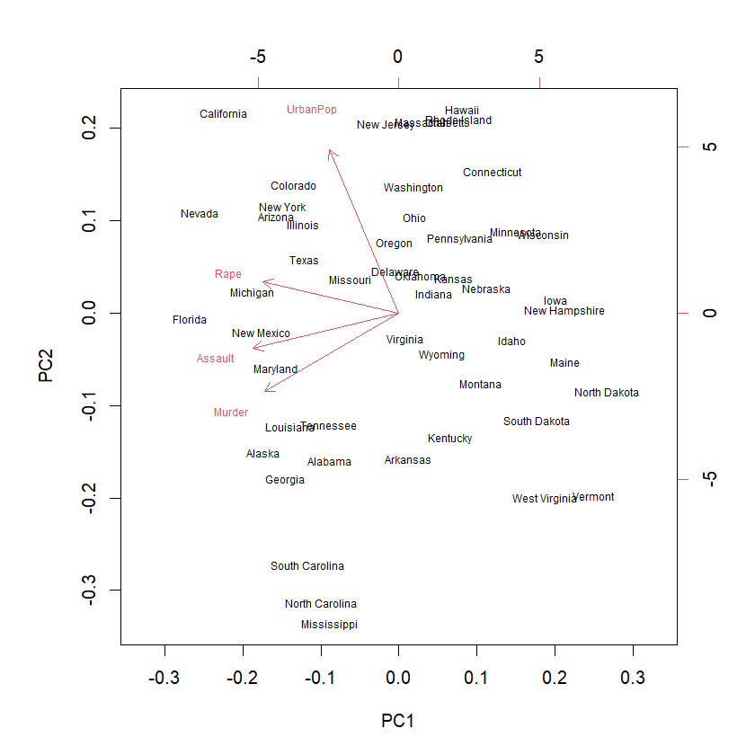
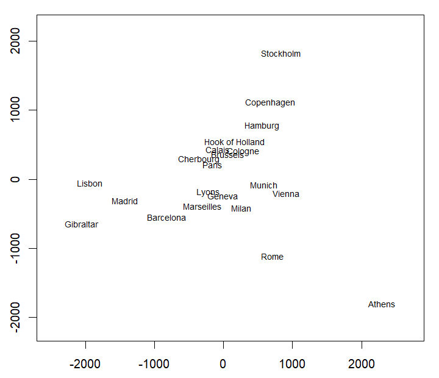

[8주차] 다차원 척도법과 주성분 분석
빅데이터개론
8주차
다차원 척도법과 주성분 분석
2027학년도 「빅데이터개론」의 준비 중인 교재입니다. 편집 상태를 검토하기 위해 미리 공개한 것으로, 수업 전에 내용과 순서가 바뀔 수 있습니다.
학사 10주차 · 교재 08 · 3부 데이터 분석 · ADsP 3과목 데이터분석 > 통계분석 (다변량 분석)
변수가 여러 개인 자료는 한 장의 그림으로 볼 수 없고, 변수끼리 상관이 있으면 같은 정보를 되풀이하여 담는다. 이 장은 자료의 차원을 줄이는 두 방법을 다룬다. 다차원 척도법은 개체 사이의 거리를 낮은 차원의 좌표로 옮기고, 주성분 분석은 상관이 있는 변수들을 서로 상관이 없는 소수의 주성분으로 요약한다. 7장 「상관 분석과 회귀 분석」의 3.5절에서 다중공선성의 대처 방법으로 든 주성분 분석이 이 장의 중심이다.
주성분 분석의 출력은 ADsP 3과목에서 R 출력을 읽는 문항으로 자주 나온다. 시험은 주성분을 구하는 계산을 묻지 않고, 출력의 세 줄(표준편차, 분산 설명 비율, 누적 기여율)과 스크리 그림에서 주성분을 몇 개 남길지를 묻는다. 개념은 변수 둘의 작은 예로 확인하고, 중심 실습에서 변수 넷의 자료에 같은 절차를 적용한다. 장의 끝에서 같은 분석의 R 출력을 읽는다.
학습 목표
- 다변량 자료에서 차원을 줄이는 까닭을 설명하고, 변수 선택과 변수 추출을 구분한다.
- 다차원 척도법의 목적을 설명하고, 계량적 다차원 척도법과 비계량적 다차원 척도법, 스트레스 값의 뜻을 구분한다.
- 주성분이 원래 변수의 선형 결합이라는 것과 표준화가 필요한 까닭을 설명한다.
- 주성분 분석 결과에서 분산 설명 비율과 누적 기여율을 읽고, 누적 기여율·스크리 그림·고윳값의 기준으로 주성분의 수를 정한다.
- 적재값으로 주성분의 뜻을 해석하고, R의
prcomp()와princomp()출력에서 같은 값을 찾는다.
준비 사항
| 항목 | 내용 |
|---|---|
| 실습 노트북 | ADsP_08주차_실습_학생용.ipynb. 「따라 하기 1~3」과 「중심 실습」의 네 부분이다 |
| 자료 | USArrests.csv(1973년 미국 50개 주의 범죄 통계), eurodist.csv(유럽 21개 도시 사이의 도로 거리). 자료 폴더의 위치는 노트북 첫 코드 셀의 DATA에 적혀 있다 |
| 앞 장과의 연계 | 5장 「결측값·이상값과 기술 통계」의 분산과 표준편차, 7장 「상관 분석과 회귀 분석」의 상관행렬과 다중공선성을 전제로 한다. USArrests와 표준화는 12장 「군집 분석과 연관 분석」에서 다시 쓴다 |
| 실습 환경 | 접속과 자료를 받는 방법은 부록 A에 있다 |
1. 차원 축소
한 개체에 대하여 여러 변수를 함께 잰 자료를 다변량 자료라 하고, 변수의 수를 자료의 차원이라 한다. 고객 한 명에 대하여 나이, 방문 횟수, 구매 금액, 체류 시간을 적었다면 4차원 자료다. 차원이 커지면 다음 문제가 생긴다.
- 그림으로 볼 수 없다. 변수가 둘이면 산점도 한 장으로 자료 전체를 본다. 변수가 넷이면 둘씩 짝지은 산점도가 여섯 장 필요하고, 그래도 네 변수를 한꺼번에 본 것은 아니다.
- 정보가 겹친다. 변수끼리 상관이 강하면 한 변수의 값으로 다른 변수의 값을 거의 알 수 있다. 이런 변수들을 회귀 분석의 독립 변수로 함께 넣으면 다중공선성이 생긴다(7장 3.5절).
- 모형이 복잡해진다. 변수가 많을수록 계산이 늘고 결과를 해석하기 어렵다.
차원 축소는 자료가 가진 정보를 될 수 있는 대로 잃지 않으면서 변수의 수를 줄이는 일이다. 방법은 두 갈래다.
| 갈래 | 하는 일 | 예 |
|---|---|---|
| 변수 선택 | 원래 변수 가운데 일부를 골라 남긴다. 남은 변수의 뜻은 그대로다 | 전진 선택법, 후진 제거법(7장 3.6절) |
| 변수 추출 | 원래 변수들을 결합하여 새 변수를 만든다. 새 변수의 뜻은 분석자가 해석한다 | 주성분 분석, 요인 분석 |
이 장의 두 방법은 받는 자료와 지키려는 것이 다르다.
| 구분 | 다차원 척도법 | 주성분 분석 |
|---|---|---|
| 받는 자료 | 개체 사이의 거리(비유사성)를 적은 행렬 | 개체가 행이고 변수가 열인 표 |
| 지키려는 것 | 개체 사이의 거리 | 자료의 분산 |
| 결과 | 개체의 낮은 차원 좌표와 배치 그림 | 새 변수(주성분)와 개체마다의 주성분 점수 |
따라 하기
노트북의 「따라 하기 1. 자료의 차원과 변수 사이의 상관」 셀을 실행한다. 이 장의 주성분 분석에 쓰는 USArrests를 읽고, 네 변수 사이의 상관을 본다.
| 열 | 뜻 |
|---|---|
Murder |
인구 10만 명당 살인 체포 건수 |
Assault |
인구 10만 명당 폭행 체포 건수 |
UrbanPop |
도시에 사는 인구의 비율(%) |
Rape |
인구 10만 명당 강간 체포 건수 |
arrests = pd.read_csv(DATA + "USArrests.csv")
print(arrests.shape)
print(arrests.head())(50, 5)
State Murder Assault UrbanPop Rape
0 Alabama 13.2 236 58 21.2
1 Alaska 10.0 263 48 44.5
2 Arizona 8.1 294 80 31.0
3 Arkansas 8.8 190 50 19.5
4 California 9.0 276 91 40.6- 확인 1 표의 크기가
(50, 5)로 나왔다. 열 다섯 가운데State는 주의 이름이므로, 분석에 쓰는 자료는 50개 주의 4차원 자료다.
cols = ["Murder", "Assault", "UrbanPop", "Rape"]
x = arrests[cols]
print(x.corr().round(3)) Murder Assault UrbanPop Rape
Murder 1.000 0.802 0.070 0.564
Assault 0.802 1.000 0.259 0.665
UrbanPop 0.070 0.259 1.000 0.411
Rape 0.564 0.665 0.411 1.000- 확인 2 상관행렬에서 가장 큰 상관 계수는
Murder와Assault의 0.802이고, 가장 작은 것은Murder와UrbanPop의 0.070이다.
범죄에 관한 세 변수가 서로 양의 상관을 보인다. 세 변수가 같은 정보를 나누어 가진다는 뜻이므로 더 적은 수의 변수로 요약할 여지가 있다. 변수 사이에 상관이 거의 없으면 주성분 분석으로 줄일 것이 없다.
다음 셀은 네 변수를 둘씩 짝지은 산점도를 한꺼번에 그린다(산점도 행렬).

- 확인 3 대각선 밖의 칸이 12개이고, 위쪽 여섯 칸과 아래쪽 여섯 칸은 가로축과 세로축만 바뀐 같은 짝이다.
Murder와Assault의 칸에서 점들이 왼쪽 아래에서 오른쪽 위로 모여 있다.
2. 다차원 척도법
2.1 목적
다차원 척도법(MDS, multidimensional scaling)은 개체 사이의 거리나 비유사성을 바탕으로 개체를 낮은 차원의 점으로 나타내는 방법이다. 차원은 보통 2차원으로 잡는다. 서로 가까운 개체는 가까이, 먼 개체는 멀리 놓이도록 좌표를 정한다.
비유사성은 두 개체가 서로 다른 정도를 나타내는 값이다. 변수의 값이 있으면 그 값으로 거리(유클리드 거리 등)를 계산하여 쓰고, 값이 없으면 응답자가 “두 상품이 얼마나 다른가”를 직접 평가한 점수나 순위를 쓴다. 결과는 개체의 배치 그림 한 장이며, 어느 개체들이 한데 모이고 어느 개체가 떨어져 있는지를 읽는다. 소비자가 평가한 상품 사이의 비유사성으로 상품들의 상대적 위치를 그리는 것이 대표적인 쓰임이다.
2.2 거리 행렬에서 좌표 구하기
고전적 다차원 척도법은 거리 행렬만으로 개체의 좌표를 구한다. 거리의 제곱을 행과 열의 평균이 0이 되도록 고친 뒤(이중 중심화), 고윳값 분해로 좌표의 축을 구하고 고윳값이 큰 축부터 차례로 쓴다. 주좌표 분석(principal coordinates analysis)이라고도 한다. 계산의 세부는 시험 범위가 아니다. 거리 행렬이 들어가고 개체마다 좌표가 나온다는 것을 기억한다.
그림을 읽을 때 주의할 점이 둘 있다.
- 축의 방향에는 뜻이 없다. 다차원 척도법이 지키는 것은 점 사이의 거리다. 그림 전체를 옮기거나 돌리거나 뒤집어도 점 사이의 거리는 그대로이므로, 좌표의 위치와 방향은 하나로 정해지지 않는다. R의
cmdscale()문서도 결과가 회전과 반사를 빼고만 정해진다고 적는다. - 축에 이름이 없다. 가로축과 세로축이 무엇을 뜻하는지는 분석자가 점들의 배치를 보고 해석한다.
2.3 계량적 다차원 척도법과 비계량적 다차원 척도법
다차원 척도법은 자료의 척도에 따라 둘로 나뉜다. 척도의 종류는 6장 「통계학 개론: 표본, 분포, 추정, 검정」의 1.4절에서 다루었다.
| 구분 | 계량적 다차원 척도법 | 비계량적 다차원 척도법 |
|---|---|---|
| 자료의 척도 | 등간 척도, 비율 척도 | 서열 척도 |
| 쓰는 정보 | 거리의 값 자체 | 거리의 순서(순위) |
| 좌표를 정하는 방식 | 그림 위의 거리가 원래 거리의 값과 가깝도록 정한다 | 그림 위의 거리의 순서가 원래 순서와 맞도록 정한다 |
| 예 | 도시 사이의 거리(km) | 응답자가 상품의 쌍을 비슷한 순서로 나열한 자료 |
| R 함수 | cmdscale() |
isoMDS() (MASS 패키지) |
고전적 다차원 척도법은 계량적 다차원 척도법의 대표적인 방법이다. 비계량적 방법(Kruskal의 방법)은 원래 비유사성에 순서를 지키는 변환(단조 변환)을 허용하고, 그 변환된 값과 그림 위의 거리가 가장 잘 맞도록 좌표를 되풀이하여 고친다. R의 isoMDS()는 출발 좌표로 cmdscale()의 결과를 쓴다.
2.4 스트레스 값
높은 차원의 관계를 2차원에 옮기면 원래의 거리를 그대로 지킬 수 없다. 스트레스 값(stress)은 그림 위의 거리가 원래의 비유사성과 어긋난 정도를 나타내는 적합도 지표다. Kruskal이 쓴 꼴은 다음과 같다.
스트레스 값 = (원래 비유사성과 그림 위의 거리의 차이를 제곱하여 더한 값 ÷ 그림 위의 거리를 제곱하여 더한 값)의 제곱근
비계량적 방법에서는 “원래 비유사성”의 자리에 순서를 지키도록 변환한 값이 들어간다.
- 0 이상의 값이며, 작을수록 적합도가 좋다. 0이면 원래의 비유사성을 완벽하게 재현한 것이다.
- 차원의 수를 늘리면 스트레스 값은 대체로 작아진다. 그러나 차원이 커지면 그림으로 보기 어려워지므로, 스트레스 값이 받아들일 만한 범위에서 낮은 차원을 고른다.
판단의 기준은 Kruskal(1964)이 자신의 경험으로 제시한 다음 값이 출발점이다.
| 스트레스 값 | 적합도 |
|---|---|
| 0.20 | 나쁘다 (poor) |
| 0.10 | 보통이다 (fair) |
| 0.05 | 좋다 (good) |
| 0.025 | 매우 좋다 (excellent) |
| 0 | 완벽하다 (perfect) |
국내의 시험 대비 자료는 이를 “0.05 이하 매우 좋다, 0.05~0.10 만족할 만하다, 0.10~0.15 보통이다, 0.15 초과 나쁘다”와 같은 구간으로 고쳐 쓰기도 하며, 구간의 경계는 자료마다 조금씩 다르다. 이 기준들은 경험에 따른 대략의 값이고, 개체의 수에 따라 스트레스 값의 크기가 달라지므로 기계적으로 적용하지 않는다. 시험에서는 “작을수록 좋다”, “0이면 완벽하다”, “0.05 안팎이면 좋다, 0.20 안팎이면 나쁘다”의 방향을 기억한다.
따라 하기
노트북의 「따라 하기 2. 다차원 척도법」 셀을 실행한다. eurodist는 유럽 21개 도시 사이의 도로 거리(km)를 적은 표다.
dist = pd.read_csv(DATA + "eurodist.csv", index_col="City")
print(dist.shape)
print(dist.iloc[:5, :5])(21, 21)
Athens Barcelona Brussels Calais Cherbourg
City
Athens 0 3313 2963 3175 3339
Barcelona 3313 0 1318 1326 1294
Brussels 2963 1318 0 204 583
Calais 3175 1326 204 0 460
Cherbourg 3339 1294 583 460 0행과 열이 모두 도시이고 칸의 값이 두 도시 사이의 거리다. 대각선의 값은 자기 자신과의 거리이므로 0이고, 대각선을 기준으로 위와 아래가 같다. 도시의 위치(위도와 경도)는 표에 없다.
- 확인 4 표의 크기가
(21, 21)이고, 브뤼셀(Brussels)과 칼레(Calais) 사이의 거리가 204로 다섯 도시 가운데 가장 가깝다.
다음 셀은 2.2절의 고전적 다차원 척도법을 계산한다. 줄마다 하는 일은 오른쪽 주석에 있다.
D = dist.to_numpy() # 거리 행렬 (21행 21열)
n = len(D) # 도시의 수
J = np.eye(n) - np.ones((n, n)) / n # 중심화 행렬
B = -0.5 * J @ (D ** 2) @ J # 거리의 제곱을 이중 중심화한다
values, vectors = np.linalg.eigh(B) # 고윳값 분해 (고윳값이 작은 것부터 나온다)
values = values[::-1] # 큰 것부터 오도록 순서를 뒤집는다
vectors = vectors[:, ::-1] # 고유벡터도 같은 순서로 뒤집는다
coords = vectors[:, :2] * np.sqrt(values[:2]) # 앞의 두 축만 써서 2차원 좌표를 만든다
mds = pd.DataFrame(coords, index=dist.index, columns=["x", "y"])
print(mds.round(1).head()) x y
City
Athens -2290.3 1798.8
Barcelona 825.4 546.8
Brussels -59.2 -367.1
Calais 82.8 -429.9
Cherbourg 352.5 -290.9- 확인 5 아테네(
Athens)의 좌표가x= -2290.3,y= 1798.8로 나왔다. 거리 행렬에서 값 21개로 적혀 있던 도시 하나가 좌표 둘로 적힌다.
이 좌표로 그림을 그리면 다음과 같다. 동쪽이 오른쪽, 북쪽이 위에 오도록 두 축의 부호를 뒤집어 그렸다(2.2절의 첫째 주의점).

- 확인 6 그림에서 스톡홀름(
Stockholm)이 위쪽 끝, 아테네가 오른쪽 아래 끝에 있고, 브뤼셀·칼레·쾰른(Cologne)은 한데 모여 있다.
거리만으로 실제 지도와 비슷한 배치를 얻었다. 그러나 도로 거리는 직선 거리가 아니므로 모든 거리를 그대로 지킬 수는 없다. 다음 셀은 아테네와 네 도시 사이의 원래 도로 거리(road)와 그림 위의 거리(map)를 견준다.
city_a = "Athens" # 바꾸어 볼 값: 다른 도시 이름 (예: "Stockholm")
pairs = pd.DataFrame({"road": dist.loc[city_a], "map": np.sqrt(((mds - mds.loc[city_a]) ** 2).sum(axis=1))})
print(pairs.loc[["Rome", "Paris", "Stockholm", "Lisbon"]].round(1)) road map
Rome 817 1724.7
Paris 3000 3166.7
Stockholm 3927 3914.4
Lisbon 4532 4573.3- 확인 7 아테네와 스톡홀름 사이는 도로 거리 3927, 그림 위의 거리 3914.4로 가깝게 지켜졌고, 아테네와 로마(
Rome) 사이는 817과 1724.7로 크게 어긋났다.
다른 도시들과의 거리를 함께 맞추다 보니 아테네와 로마의 거리가 두 배 넘게 늘어났다. 이렇게 어긋난 정도를 210쌍 모두에서 모아 2.4절의 식으로 요약한 것이 스트레스 값이다.
upper = np.triu_indices(n, k=1) # 대각선 위쪽 칸의 위치 (쌍마다 한 번씩)
D_map = np.sqrt(((coords[:, None, :] - coords[None, :, :]) ** 2).sum(axis=2))
print(len(upper[0]))
print(round(np.sqrt(((D[upper] - D_map[upper]) ** 2).sum() / (D_map[upper] ** 2).sum()), 4))210
0.0891- 확인 8 도시의 쌍이 210개이고, 고전적 다차원 척도법의 좌표로 계산한 스트레스 값이 0.0891로 나왔다.
0.0891은 Kruskal의 기준으로 “좋다(0.05)”와 “보통이다(0.10)” 사이에 있다. 같은 자료에 비계량적 다차원 척도법을 적용하면 스트레스 값이 7.506%, 곧 약 0.075로 조금 더 작아진다(5.7절). 비계량적 방법은 거리의 값이 아니라 순서만 맞추면 되므로 같은 차원에서 스트레스 값을 더 낮출 수 있다.
3. 주성분 분석
3.1 목적과 주성분
주성분 분석(PCA, principal component analysis)은 상관이 있는 여러 변수를 서로 상관이 없는 소수의 주성분으로 요약하는 방법이다. 주성분은 원래 변수의 선형 결합, 곧 변수마다 계수를 곱하여 더한 식이다.
주성분 = 계수₁ × 변수₁ + 계수₂ × 변수₂ + … + 계수ₚ × 변수ₚ
계수는 다음 규칙으로 정한다. 계수를 제곱하여 더한 값은 1로 맞춘다.
- 첫째 주성분(PC1)은 분산이 가장 커지도록 계수를 정한 선형 결합이다. 분산이 크다는 것은 개체들의 차이를 가장 잘 드러낸다는 뜻이다.
- 둘째 주성분(PC2)은 첫째 주성분과 상관이 없는 선형 결합 가운데 분산이 가장 큰 것이다.
- 셋째부터도 같은 방식으로, 앞의 주성분들과 상관이 없으면서 분산이 가장 큰 것을 차례로 정한다.
| 성질 | 내용 |
|---|---|
| 수 | 주성분은 변수의 수만큼 나온다. 변수가 넷이면 주성분도 넷이다 |
| 순서 | 분산이 큰 순서로 번호가 붙는다. PC1의 분산이 가장 크다 |
| 상관 | 서로 다른 주성분 사이의 상관 계수는 0이다 |
| 분산의 합 | 주성분의 분산을 모두 더하면 원래 변수의 분산을 모두 더한 값과 같다 |
| 종속 변수 | 쓰지 않는다. 변수들 사이의 상관만으로 주성분을 구한다 |
주성분을 변수의 수만큼 모두 쓰면 줄어드는 것이 없다. 분산이 큰 앞쪽의 주성분 몇 개만 남기고 나머지를 버리는 것이 차원 축소이며, 버린 주성분의 분산만큼 정보를 잃는다.
3.2 표준화: 공분산행렬과 상관행렬
주성분은 분산이 큰 방향을 찾는다. 그런데 분산은 측정 단위와 값의 크기에 따라 달라진다. USArrests에서 폭행 체포 건수는 살인 체포 건수보다 값이 훨씬 커서 분산도 훨씬 크다(따라 하기 3). 이대로 주성분을 구하면 분산이 큰 Assault가 첫째 주성분을 거의 혼자 차지한다. 변수가 중요해서가 아니라 값이 커서 생기는 결과다.
그래서 변수의 단위가 다르거나 분산의 크기가 크게 다르면 변수를 표준화한 뒤 주성분을 구한다. 표준화는 변수마다 평균을 빼고 표준편차로 나누는 것이며, 표준화한 변수는 평균이 0이고 표준편차가 1이다. 표준편차는 5장 2.3절처럼 n - 1로 나누어 구한다.
표준화하지 않은 자료로 구한 주성분은 공분산행렬에서 나오고, 표준화한 자료로 구한 주성분은 상관행렬에서 나온다. 표준화한 변수들의 공분산이 곧 원래 변수들의 상관 계수이기 때문이다. 시험은 이 둘의 선택을 묻는다.
| 쓰는 행렬 | 표준화 | 쓰는 경우 |
|---|---|---|
| 공분산행렬 | 하지 않는다 | 변수들의 단위가 같고 분산의 크기가 비슷할 때. 값의 크기 차이를 결과에 반영하려 할 때 |
| 상관행렬 | 한다 | 변수들의 단위가 다르거나 분산의 크기가 크게 다를 때 |
표준화는 단위와 크기의 차이만 없앤다. 변수 사이의 상관은 그대로다.
3.3 고윳값, 분산 설명 비율, 누적 기여율
주성분 분석의 결과는 주성분마다 다음 값으로 요약한다.
| 값 | 뜻 | 구하는 법 |
|---|---|---|
| 주성분의 표준편차 | 주성분 점수가 흩어진 정도 | 분산의 제곱근 |
| 주성분의 분산(고윳값) | 그 주성분이 담은 분산의 양 | 상관행렬(또는 공분산행렬)의 고윳값 |
| 분산 설명 비율(기여율) | 전체 분산 가운데 그 주성분이 설명하는 비율 | 그 주성분의 분산 ÷ 전체 분산 |
| 누적 기여율 | 첫째 주성분부터 그 주성분까지 설명하는 비율 | 분산 설명 비율을 앞에서부터 더한 값 |
고윳값은 주성분을 구하는 계산(행렬의 고윳값 분해)에서 나오는 값의 이름이며 주성분의 분산과 같다. 시험에서 “고윳값”이라고 하면 주성분의 분산으로 읽는다. 표준화한 경우 변수 하나의 분산이 1이므로 전체 분산 = 고윳값의 합 = 변수의 수다. 마지막 주성분까지의 누적 기여율은 언제나 1이다.
변수가 둘이고 상관 계수가 r이면 상관행렬의 고윳값은 1 + r과 1 - r이다. 상관이 강할수록 첫째 주성분이 전체 분산 2 가운데 더 많은 몫을 차지한다. 따라 하기 3에서 Murder와 Assault(r = 0.802)로 이것을 확인한다.
3.4 주성분 수를 정하는 기준
주성분을 몇 개 남길지는 다음 세 기준으로 정한다.
| 기준 | 내용 |
|---|---|
| 누적 기여율 | 누적 기여율이 정한 수준에 처음 이르는 데까지 남긴다. 흔히 70~90%를 쓰고, 80%를 예로 드는 문헌이 많다 |
| 스크리 그림 | 고윳값이 급하게 내려가다가 완만해지기 시작하는 곳(팔꿈치)을 찾아, 그 바로 앞의 주성분까지 남긴다 |
| 고윳값 | 고윳값(주성분의 분산)이 1 이상인 주성분을 남긴다. 상관행렬을 쓴 경우의 기준이다(카이저 기준) |
스크리 그림(scree plot)은 가로축에 주성분의 번호, 세로축에 주성분의 분산(고윳값)을 놓고 점을 선으로 이은 그림이다. 선이 누운 뒤의 주성분은 분산이 작아 더해도 설명이 거의 늘지 않는다.
고윳값 1이 기준이 되는 까닭은 다음과 같다. 상관행렬의 고윳값의 평균은 1이고, 표준화한 변수 하나의 분산도 1이다. 고윳값이 1보다 작은 주성분은 원래 변수 하나만큼의 정보도 담지 못한 것이므로 남길 값어치가 작다고 본다. 공분산행렬을 쓴 경우에는 1이 아니라 고윳값의 평균을 기준으로 삼는다.
세 기준은 서로 다른 답을 낼 수 있다.
- 고윳값 기준은 값이 1 바로 아래인 주성분(예: 0.99)을 기계적으로 버린다. 그래서 1 대신 0.7을 쓰자는 제안도 있다.
- 스크리 그림의 팔꿈치는 보는 사람에 따라 다르게 잡힌다. 팔꿈치의 점까지 남기는 문헌도 있다. 이 교재는 “완만해지기 시작하는 곳의 바로 앞까지”로 통일한다.
- 누적 기여율은 몇 %를 기준으로 하느냐에 따라 답이 달라진다.
그러므로 실제 분석에서는 세 기준을 함께 보고 주성분의 해석 가능성까지 고려하여 정한다. 시험의 문항은 “누적 기여율이 80% 이상이 되도록”, “고윳값이 1 이상인”처럼 기준을 정해 주고 묻는다. 주어진 기준대로 출력에서 읽는다.
3.5 적재값과 주성분의 해석
주성분의 식의 계수를 적재값(loading)이라 한다. 적재값의 표는 행이 원래 변수, 열이 주성분이며, 한 열을 위에서 아래로 읽으면 그 주성분의 식이 된다. 적재값은 다음과 같이 읽는다.
- 절댓값이 큰 변수가 그 주성분에 크게 기여한다. 주성분의 뜻은 절댓값이 큰 변수를 보고 해석한다.
- 부호는 방향이다. 한 열 안에서 부호가 같은 변수들은 그 주성분에서 같은 방향으로 움직이고, 부호가 다른 변수들은 반대 방향으로 움직인다.
- 한 열의 부호를 모두 뒤집어도 같은 주성분이다. 분산과 다른 주성분과의 상관이 그대로이기 때문이다. 그래서 프로그램마다 부호가 다르게 나올 수 있다(5.4절).
- 한 열의 적재값을 제곱하여 더하면 1이다.
주성분의 이름은 출력에 나오지 않으며 적재값을 보고 분석자가 붙인다. R의 문서는 rotation과 loadings의 값(고유벡터)을 적재값이라 부르고 이 교재도 이를 따른다. 변수와 주성분 사이의 상관 계수를 적재값이라 부르는 문헌도 있다.
3.6 주성분 점수와 행렬도
개체마다 주성분의 식에 표준화한 값을 넣어 계산한 것이 주성분 점수(score)다. 변수가 p개인 표가 주성분 p개의 표로 바뀌고, 이 가운데 앞의 몇 열만 남기면 차원이 줄어든다. 주성분 점수끼리는 상관이 없으므로, 주성분을 회귀 분석의 독립 변수로 쓰면 다중공선성이 생기지 않는다.
PC1을 가로축, PC2를 세로축에 놓고 개체를 그리면 변수가 많은 자료를 그림 한 장으로 본다. 행렬도(biplot)는 이 산점도 위에 원래 변수의 적재값을 화살표로 겹쳐 그린 그림이며, 개체와 변수를 한 장에 함께 나타낸다. 읽는 법은 5.5절의 R 그림에서 다룬다.
3.7 주성분 분석과 요인 분석
요인 분석(factor analysis)도 여러 변수를 소수의 새 변수로 줄인다. 두 방법은 모형이 다르다. 주성분 분석은 관측한 변수를 결합하여 분산을 많이 담는 새 변수를 만든다. 요인 분석은 관측한 변수들의 뒤에 직접 잴 수 없는 잠재 요인이 있다고 가정하고, 각 변수를 “잠재 요인의 선형 결합 + 그 변수 고유의 오차”로 나타낸다.
| 구분 | 주성분 분석 | 요인 분석 |
|---|---|---|
| 목적 | 변수들을 소수의 주성분으로 요약한다 | 변수들의 뒤에 있는 잠재 요인을 찾는다 |
| 새 변수와 원래 변수의 관계 | 주성분이 원래 변수의 선형 결합이다 | 원래 변수가 잠재 요인의 선형 결합에 오차를 더한 것이다 |
| 새 변수 사이의 순서 | 분산이 큰 순서로 나오므로 첫째 주성분이 가장 중요하다 | 해석하기 쉽도록 요인을 회전한 뒤에는 분산에 따른 순서를 두지 않고 대등하게 해석한다 |
| 새 변수의 이름 | 보통 첫째 주성분, 둘째 주성분으로 부른다 | 분석자가 요인에 뜻에 맞는 이름을 붙인다 |
| 회전 | 하지 않는다 | 흔히 한다(배리맥스 회전 등) |
공통점도 있다. 둘 다 변수 사이의 상관을 이용하여 차원을 줄이고, 종속 변수 없이 분석한다.
따라 하기
노트북의 「따라 하기 3. 표준화와 두 변수의 주성분」 셀을 실행한다. 먼저 네 변수의 분산을 본다.
print(x.var().round(2))Murder 18.97
Assault 6945.17
UrbanPop 209.52
Rape 87.73
dtype: float64- 확인 9
Assault의 분산이 6945.17로Murder의 분산 18.97의 360배가 넘는다.
z = (x - x.mean()) / x.std()
print(z.head().round(3))
print(z.std().round(3).tolist()) # 표준화한 네 변수의 표준편차 Murder Assault UrbanPop Rape
0 1.243 0.783 -0.521 -0.003
1 0.508 1.107 -1.212 2.484
2 0.072 1.479 0.999 1.043
3 0.232 0.231 -1.074 -0.185
4 0.278 1.263 1.759 2.068
[1.0, 1.0, 1.0, 1.0]첫 줄(앨라배마)의 Murder가 1.243이라는 것은, 앨라배마의 살인 체포 건수가 50개 주의 평균보다 표준편차의 1.243배만큼 크다는 뜻이다.
- 확인 10 앨라배마의 표준화한
Murder가 1.243이고, 표준화한 네 변수의 표준편차가 모두 1.0이다.
다음 셀은 표준화한 변수들의 공분산행렬을 구한다(z.cov()). 출력은 따라 하기 1의 상관행렬과 칸마다 같다.
Murder Assault UrbanPop Rape
Murder 1.000 0.802 0.070 0.564
Assault 0.802 1.000 0.259 0.665
UrbanPop 0.070 0.259 1.000 0.411
Rape 0.564 0.665 0.411 1.000- 확인 11 표준화한 변수의 공분산행렬에서
Murder와Assault의 칸이 0.802로, 상관행렬의 값과 같다. 대각선은 모두 1.000이다.
이제 상관이 강한 두 변수만으로 주성분 분석을 한다. PCA()는 주성분 분석을 하는 도구를 만들고, fit_transform()은 주성분을 구한 뒤 개체마다 주성분 점수를 계산하여 돌려준다.
z2 = z[["Murder", "Assault"]]
pca2 = PCA()
scores2 = pca2.fit_transform(z2)
print(pca2.explained_variance_.round(4)) # 주성분의 분산 (고윳값)
print(pca2.explained_variance_ratio_.round(4)) # 분산 설명 비율[1.8019 0.1981]
[0.9009 0.0991]- 확인 12 두 주성분의 분산이 1.8019와 0.1981이고, PC1의 분산 설명 비율이 0.9009다.
두 분산의 합은 2로 변수의 수와 같고, 3.3절대로 1 + 0.802와 1 - 0.802다. PC1 하나가 두 변수의 정보의 90%를 담으므로 변수 둘을 하나로 줄여도 잃는 것이 10%에 그친다.
print(pd.DataFrame(pca2.components_.T, index=["Murder", "Assault"], columns=["PC1", "PC2"]).round(3)) PC1 PC2
Murder 0.707 0.707
Assault 0.707 -0.707- 확인 13 PC1의 적재값이 두 변수 모두 0.707이고, PC2의 적재값은 0.707과 -0.707로 부호가 반대다.
PC1 = 0.707 × Murder + 0.707 × Assault는 두 범죄의 수준을 똑같은 비중으로 더한 “범죄의 정도”다. PC2는 두 변수의 차이이며, 살인이 폭행에 견주어 많은 주에서 크다. 0.707² + 0.707² ≈ 1이다.
score2 = pd.DataFrame(scores2, index=arrests["State"], columns=["PC1", "PC2"])
print(score2.head(3).round(3))
print(round(abs(score2["PC1"].corr(score2["PC2"])), 3)) # abs()는 -0.0을 0.0으로 적으려고 붙였다 PC1 PC2
State
Alabama 1.432 0.325
Alaska 1.142 -0.424
Arizona 1.096 -0.995
0.0앨라배마의 PC1 점수는 표준화한 값을 PC1의 식에 넣은 0.707 × 1.243 + 0.707 × 0.783 ≈ 1.432다.
- 확인 14 앨라배마의 PC1 점수가 1.432로 손으로 계산한 값과 같고, 두 주성분 점수 사이의 상관 계수가 0.0이다.
원래의 두 변수는 상관 계수가 0.802였으나, 주성분으로 바꾸자 상관이 없어졌다.
4. 중심 실습: 주성분 분석에 의한 차원 축소
USArrests의 네 변수를 표준화하여 주성분을 구하고, 세 기준으로 남길 주성분의 수를 정한다. 이어서 적재값으로 주성분을 해석하고, 표준화하지 않으면 결과가 어떻게 달라지는지 확인한다.
준비
- 실습 노트북에서 「따라 하기 1~3」의 셀이 실행되어 있는지 확인한다. 중심 실습은 그 셀들이 만든
x,z,arrests를 쓴다. - 「중심 실습」의 셀을 위에서부터 차례로 실행하면서 아래의 단계를 따른다.
절차
단계마다 실행할 셀, 읽을 값, 확인할 상태를 적었다.
단계 1. 중요도의 표
data = z셀과 그 아래의 표를 만드는 셀을 실행한다.- 출력에서 PC1의 네 값을 읽는다.
data = z # 바꾸어 볼 값: x (표준화하지 않은 원래 값)
pca = PCA()
scores = pca.fit_transform(data)
names = ["PC1", "PC2", "PC3", "PC4"]importance = pd.DataFrame({
"sdev": np.sqrt(pca.explained_variance_), # 주성분의 표준편차
"variance": pca.explained_variance_, # 주성분의 분산 (고윳값)
"proportion": pca.explained_variance_ratio_, # 분산 설명 비율
"cumulative": pca.explained_variance_ratio_.cumsum() # 누적 기여율
}, index=names)
print(importance.T.round(4)) PC1 PC2 PC3 PC4
sdev 1.5749 0.9949 0.5971 0.4164
variance 2.4802 0.9898 0.3566 0.1734
proportion 0.6201 0.2474 0.0891 0.0434
cumulative 0.6201 0.8675 0.9566 1.0000열이 주성분이고 행이 3.3절의 네 값이다. R의 summary()와 같은 배치로 맞추었다.
| 행 | 이름 | PC1의 값 | 관계 |
|---|---|---|---|
sdev |
주성분의 표준편차 | 1.5749 | 제곱하면 분산이다. 1.5749² ≈ 2.480 |
variance |
주성분의 분산(고윳값) | 2.4802 | 네 값의 합은 4다 |
proportion |
분산 설명 비율 | 0.6201 | 2.4802 ÷ 4 ≈ 0.620 |
cumulative |
누적 기여율 | 0.6201 | PC2까지는 0.6201 + 0.2474 = 0.8675 |
- 확인 15 PC1의 표준편차가 1.5749, 분산이 2.4802, 분산 설명 비율이 0.6201로 나왔다.
다음 셀은 주성분의 분산을 모두 더한다(pca.explained_variance_.sum()). 출력은 4.0이다.
- 확인 16 주성분 분산의 합이 4.0으로 변수의 수와 같고, PC2까지의 누적 기여율이 0.8675다.
첫째 주성분 하나가 전체 분산의 62.01%를 설명하고, 둘째 주성분까지 쓰면 86.75%를 설명한다. 변수 넷을 주성분 둘로 줄이면 정보의 13.25%를 잃는다.
단계 2. 스크리 그림과 주성분의 수
- 스크리 그림을 그리는 셀을 실행한다.
- 이웃한 주성분 사이에서 분산이 줄어든 폭을 출력하는 셀을 실행한다.
- 세 기준으로 남길 주성분의 수를 정한다.

print(pd.Series(-np.diff(pca.explained_variance_), index=["PC1-PC2", "PC2-PC3", "PC3-PC4"]).round(4))PC1-PC2 1.4905
PC2-PC3 0.6332
PC3-PC4 0.1831
dtype: float64- 확인 17 분산이 줄어든 폭이 1.4905, 0.6332, 0.1831로 나왔다. PC3에서 PC4로는 0.1831만 줄어 선이 눕는다.
세 기준을 이 자료에 적용하면 다음과 같다.
| 기준 | 이 자료에서 읽는 것 | 남기는 수 |
|---|---|---|
| 누적 기여율 80% | PC1까지 62.01%, PC2까지 86.75%다. 80%를 처음 넘는 것은 PC2다 | 2 |
| 스크리 그림 | 1번에서 2번, 2번에서 3번으로는 크게 내려가고 3번부터 선이 눕는다. 완만해지기 시작하는 곳이 3번이므로 그 앞인 2번까지 남긴다 | 2 |
| 고윳값 1 이상 | PC1은 2.4802로 1보다 크다. PC2는 0.9898로 1에 조금 못 미친다 | 1 |
이 자료는 3.4절에서 말한 엇갈림의 예다. 고윳값의 기준을 글자 그대로 적용하면 하나만 남는다. 그러나 PC2의 고윳값이 1에 매우 가깝고 PC1만으로는 누적 기여율이 62.01%에 그치므로, 둘을 남기는 것이 타당하다.
단계 3. 적재값과 주성분의 해석
- 적재값의 표를 출력하는 셀을 실행한다.
- 열마다 적재값을 제곱하여 더한 값을 출력하는 셀을 실행한다.
loadings = pd.DataFrame(pca.components_.T, index=cols, columns=names)
print(loadings.round(3)) PC1 PC2 PC3 PC4
Murder 0.536 -0.418 -0.341 -0.649
Assault 0.583 -0.188 -0.268 0.743
UrbanPop 0.278 0.873 -0.378 -0.134
Rape 0.543 0.167 0.818 -0.089PC1 = 0.536 × Murder + 0.583 × Assault + 0.278 × UrbanPop + 0.543 × Rape
PC2 = -0.418 × Murder - 0.188 × Assault + 0.873 × UrbanPop + 0.167 × Rape
다음 셀의 출력은 [1.0, 1.0, 1.0, 1.0]이다. 한 열의 적재값을 제곱하여 더하면 1이다.
- 확인 18 PC1에서 절댓값이 가장 큰 적재값은
Assault의 0.583이고, PC2에서는UrbanPop의 0.873이다. 네 열의 제곱합이 모두 1.0이다.
| 주성분 | 적재값의 모양 | 해석 |
|---|---|---|
| PC1 | 네 변수의 부호가 모두 같다. Murder, Assault, Rape의 절댓값이 0.54 안팎으로 크고 UrbanPop은 0.278로 작다 |
범죄가 전반적으로 많은 정도. PC1이 큰 주는 세 범죄의 체포 건수가 모두 많다 |
| PC2 | UrbanPop이 0.873으로 두드러지게 크다. Murder는 -0.418로 부호가 반대다 |
도시화의 정도. PC2가 큰 주는 도시 인구의 비율이 높다 |
단계 4. 주성분 점수
- 주성분 점수의 앞 다섯 줄을 출력하는 셀을 실행한다.
- 주성분 점수끼리의 상관 계수를 출력하는 셀을 실행한다.
- PC1이 가장 작은 주 셋과 가장 큰 주 셋을 출력하는 셀을 실행한다.
- 주성분 점수의 산점도를 그리는 셀을 실행한다.
score = pd.DataFrame(scores, index=arrests["State"], columns=names)
print(score.head().round(3)) PC1 PC2 PC3 PC4
State
Alabama 0.976 -1.122 -0.440 -0.155
Alaska 1.931 -1.062 2.020 0.434
Arizona 1.745 0.738 0.054 0.826
Arkansas -0.140 -1.109 0.113 0.181
California 2.499 1.527 0.593 0.339앨라배마의 PC1 점수는 따라 하기 3의 표준화한 값을 PC1의 식에 넣어 구한다.
0.536 × 1.243 + 0.583 × 0.783 + 0.278 × (-0.521) + 0.543 × (-0.003) ≈ 0.976
- 확인 19 앨라배마의 PC1 점수가 0.976으로 손으로 계산한 값과 같다.
print(score.corr().round(3).abs()) # abs()는 -0.0을 0.0으로 적으려고 붙였다 PC1 PC2 PC3 PC4
PC1 1.0 0.0 0.0 0.0
PC2 0.0 1.0 0.0 0.0
PC3 0.0 0.0 1.0 0.0
PC4 0.0 0.0 0.0 1.0- 확인 20 주성분 점수의 상관행렬에서 대각선 밖의 값이 모두 0.0이다.
따라 하기 1의 상관행렬에서는 변수끼리 상관이 있었으나 주성분으로 바꾸자 상관이 없어졌다.
print(score["PC1"].sort_values().round(3).iloc[[0, 1, 2, -3, -2, -1]])State
North Dakota -2.962
Vermont -2.773
Maine -2.373
California 2.499
Nevada 2.846
Florida 2.983
Name: PC1, dtype: float64- 확인 21 PC1이 가장 큰 주는 플로리다(
Florida, 2.983)이고 가장 작은 주는 노스다코타(North Dakota, -2.962)다.

- 오른쪽 끝의 플로리다, 네바다, 캘리포니아는 PC1이 크다. 범죄에 관한 세 변수의 값이 모두 큰 주다. 왼쪽 끝의 노스다코타, 버몬트는 그 반대다.
- 위쪽의 하와이, 캘리포니아는 PC2가 크다. 도시 인구의 비율이 높은 주다. 아래쪽의 미시시피, 노스캐롤라이나는 도시 인구의 비율이 낮고 살인 체포 건수가 많은 주다.
단계 5. 해석 문장의 작성
- 단계 2의 판단과 단계 1의 누적 기여율로 해석 문장 한 개를 쓴다.
- 문장에 남기는 주성분의 수와 그때의 누적 기여율을 넣는다.
예: “표준화한 네 변수를 주성분 둘로 줄이면 전체 분산의 86.75%를 설명한다. PC1은 범죄의 정도, PC2는 도시화의 정도로 해석된다.”
- 확인 22 해석 문장에 주성분의 수(2)와 누적 기여율(0.8675 또는 86.75%)이 들어 있다.
값을 바꾸어 보기
단계 1의 data = z 줄을 data = x로 바꾼다. 표준화하지 않은 원래 값으로 주성분을 구하게 된다. 그 셀부터 아래의 셀을 모두 다시 실행하고 물음에 답한다.
- PC1의 분산 설명 비율은 얼마로 바뀌는가. PC1 하나로 누적 기여율이 몇 %에 이르는가.
- PC1의 적재값에서 절댓값이 가장 큰 변수는 무엇이고 그 값은 얼마인가. 나머지 세 변수의 적재값은 어느 정도인가.
- 따라 하기 3의 분산 출력에서 네 변수의 분산을 찾는다. 1번과 2번의 결과가 나온 까닭을 분산의 값으로 설명한다.
- 이 결과를 보고 “주성분 하나로 충분하다”고 결론을 내려도 되는가. 3.2절의 표에 비추어 답한다.
물음에 답한 뒤 data = z로 되돌리고 셀을 다시 실행한다. 노트북의 city_a(따라 하기 2)를 "Stockholm"으로 바꾸어 다른 도시에서 거리가 얼마나 지켜졌는지 보아도 된다.
완료 기준
| 번호 | 점검 항목 | 점검 방법 | 기준 값 |
|---|---|---|---|
| 1 | 중요도의 표 | 단계 1의 출력 | PC1의 분산 설명 비율 0.6201, PC2까지의 누적 기여율 0.8675 |
| 2 | 주성분 분산의 합 | 단계 1의 합계 셀 | 4.0 |
| 3 | 세 기준의 판단 | 단계 2의 표를 채운 결과 | 누적 기여율 2, 스크리 그림 2, 고윳값 1 |
| 4 | 적재값의 해석 | 단계 3의 출력 | PC1은 Assault 0.583, PC2는 UrbanPop 0.873 |
| 5 | 주성분 점수의 상관 | 단계 4의 출력 | 대각선 밖이 모두 0.0 |
| 6 | 되돌린 상태 | 노트북 단계 1의 셀 | data = z |
| 7 | 해석 문장 | 제출한 문장 | 주성분 2개와 누적 기여율 0.8675(86.75%) |
제출물
- 실습 노트북. 모든 셀을 실행하고
data = z로 되돌린 상태로 낸다. - 해석 문장 한 개(단계 5).
5. R 출력 해석
같은 분석을 R로 실행한 코드와 출력이다. R을 실행하지 않고 읽는다. 시험의 주성분 분석 문항은 5.3절의 summary() 출력과 같은 모양으로 나온다.
5.1 파이썬과 R의 대응표
| 하는 일 | 파이썬 | R |
|---|---|---|
| 상관행렬 | x.corr() |
cor(x) |
| 고전적 다차원 척도법 | numpy로 직접 계산한다(이중 중심화, np.linalg.eigh) |
cmdscale(d) |
| 비계량적 다차원 척도법 | 이 장에서 실행하지 않았다 | isoMDS(d) (MASS 패키지) |
| 표준화 | (x - x.mean()) / x.std() |
scale(x). prcomp() 안에서는 scale = TRUE |
| 주성분 분석 | PCA().fit_transform(z) |
prcomp(x, scale = TRUE), princomp(x, cor = TRUE) |
| 주성분의 표준편차 | np.sqrt(pca.explained_variance_) |
p$sdev |
| 분산 설명 비율과 누적 기여율 | pca.explained_variance_ratio_와 .cumsum() |
summary(p) |
| 적재값 | pca.components_.T |
p$rotation, q$loadings |
| 주성분 점수 | fit_transform()이 돌려준 값 |
p$x, q$scores |
| 스크리 그림 | plt.plot()으로 직접 그린다 |
screeplot(p, type = "lines") |
| 행렬도 | 기본 함수가 없다 | biplot(p) |
R에서 USArrests와 eurodist는 따로 읽어 오지 않아도 쓸 수 있는 내장 자료다. R의 USArrests는 주의 이름이 열이 아니라 행의 이름으로 들어 있어, 네 변수만 있는 표로 다룬다.
5.2 같은 일을 하는 R 코드
loc <- cmdscale(eurodist) # 고전적 다차원 척도법. 도시의 2차원 좌표를 구한다
plot(loc[, 1], -loc[, 2], type = "n") # 빈 그림을 그린다. 세로축의 부호를 뒤집는다
text(loc[, 1], -loc[, 2], rownames(loc)) # 좌표의 자리에 도시 이름을 적는다
iso <- isoMDS(eurodist) # 비계량적 다차원 척도법 (library(MASS)가 먼저 필요하다)
p <- prcomp(USArrests, scale = TRUE) # 표준화한 뒤 주성분 분석을 한다
summary(p) # 표준편차, 분산 설명 비율, 누적 기여율
p # 표준편차와 적재값(Rotation)
head(p$x, 5) # 주성분 점수의 앞 다섯 줄
screeplot(p, type = "lines") # 스크리 그림
biplot(p) # 행렬도
q <- princomp(USArrests, cor = TRUE) # 상관행렬로 주성분 분석을 한다
summary(q) # prcomp의 summary와 같은 세 줄
q$loadings # 적재값주성분 분석 함수는 둘이다. prcomp()에서는 scale = TRUE가, princomp()에서는 cor = TRUE가 표준화하여(상관행렬로) 분석한다는 뜻이다. 두 인자의 기본값은 모두 FALSE이므로, 적지 않으면 표준화하지 않고 공분산행렬로 분석한다. prcomp()의 인자의 정식 이름은 scale.이며, R은 앞부분만 맞게 적은 scale도 같은 인자로 받아들인다. 문항이 R 코드를 주고 “어느 행렬을 썼는가”를 물으면 이 인자를 본다.
5.3 출력의 해석 (1): summary(prcomp())
Importance of components:
PC1 PC2 PC3 PC4
Standard deviation 1.5749 0.9949 0.59713 0.41645
Proportion of Variance 0.6201 0.2474 0.08914 0.04336
Cumulative Proportion 0.6201 0.8675 0.95664 1.00000열은 주성분이고 행은 세 줄이다. 시험의 주성분 분석 문항은 대부분 이 세 줄에서 답이 나온다.
| 줄 | 뜻 | 중심 실습 단계 1의 행 |
|---|---|---|
Standard deviation |
주성분의 표준편차. 제곱하면 주성분의 분산(고윳값)이다 | sdev |
Proportion of Variance |
분산 설명 비율. 그 주성분 하나가 전체 분산 가운데 설명하는 비율이다 | proportion |
Cumulative Proportion |
누적 기여율. 첫째 주성분부터 그 주성분까지 더한 비율이다 | cumulative |
세 줄의 값은 중심 실습의 파이썬 출력과 같다. R은 작은 값을 한 자리 더 적었을 뿐이다. R의 summary()에는 분산(고윳값)의 줄이 없으므로, 고윳값이 필요하면 표준편차를 제곱한다. R에서 상관행렬의 고윳값을 따로 구하면(eigen(cor(USArrests))$values) 다음과 같이 표준편차의 제곱과 같다.
[1] 2.4802 0.9898 0.3566 0.1734시험이 묻는 값은 다음 자리에 있다.
| 묻는 것 | 출력에서 읽는 자리 | 이 출력의 값 |
|---|---|---|
| 분석에 쓴 변수의 수 | 열의 수. 주성분은 변수의 수만큼 나온다 | 4 |
| 첫째 주성분이 설명하는 분산의 비율 | Proportion of Variance의 PC1 |
0.6201 (62.01%) |
| 둘째 주성분 하나가 설명하는 분산의 비율 | Proportion of Variance의 PC2 |
0.2474 (24.74%) |
| 주성분 둘을 쓸 때 설명하는 분산의 비율 | Cumulative Proportion의 PC2 |
0.8675 (86.75%) |
| 주성분 둘만 남길 때 잃는 정보 | 1 - Cumulative Proportion의 PC2 |
1 - 0.8675 = 0.1325 |
| 누적 기여율 80% 이상에 필요한 주성분의 수 | Cumulative Proportion이 0.8을 처음 넘는 열 |
2 (PC2에서 0.8675) |
| 누적 기여율 90% 이상에 필요한 주성분의 수 | Cumulative Proportion이 0.9를 처음 넘는 열 |
3 (PC3에서 0.95664) |
| 첫째 주성분의 분산(고윳값) | Standard deviation의 PC1을 제곱한다 |
1.5749² ≈ 2.48 |
| 고윳값이 1 이상인 주성분의 수 | Standard deviation이 1 이상인 열을 센다. 표준편차가 1보다 작으면 제곱도 1보다 작다 |
1 (PC2는 0.9949로 1보다 작다) |
헷갈리기 쉬운 곳은 둘째 줄과 셋째 줄이다. “둘째 주성분이 설명하는 비율”은 둘째 줄(0.2474)이고, “둘째 주성분까지 설명하는 비율”은 셋째 줄(0.8675)이다. 문항의 “까지”라는 말을 확인한다. 세 줄은 다음 관계로 이어져 있으므로, 한 줄이 빈칸인 문항은 이 관계로 푼다.
- 셋째 줄의 값은 둘째 줄을 왼쪽부터 더한 값이다. 0.6201 + 0.2474 = 0.8675
- 둘째 줄의 값은 셋째 줄에서 바로 앞 열의 값을 뺀 값이다. PC3은 0.95664 - 0.8675 ≈ 0.0891
- 표준화한 경우 둘째 줄의 값은 표준편차의 제곱을 변수의 수로 나눈 값이다. PC2는 0.9949² ÷ 4 ≈ 0.247
5.4 출력의 해석 (2): 적재값과 주성분 점수
prcomp()의 결과를 그대로 출력하면 표준편차와 적재값이 나온다.
Standard deviations (1, .., p=4):
[1] 1.5748783 0.9948694 0.5971291 0.4164494
Rotation (n x k) = (4 x 4):
PC1 PC2 PC3 PC4
Murder -0.5358995 -0.4181809 0.3412327 0.64922780
Assault -0.5831836 -0.1879856 0.2681484 -0.74340748
UrbanPop -0.2781909 0.8728062 0.3780158 0.13387773
Rape -0.5434321 0.1673186 -0.8177779 0.08902432Rotation이 적재값의 표다. 행이 원래 변수, 열이 주성분이며 중심 실습 단계 3의 파이썬 표와 같은 자리에 같은 크기의 값이 있다.
| 묻는 것 | 읽는 자리 | 이 출력의 값 |
|---|---|---|
| 첫째 주성분의 식 | PC1 열을 위에서 아래로 |
PC1 = -0.536 × Murder - 0.583 × Assault - 0.278 × UrbanPop - 0.543 × Rape |
| 첫째 주성분에 가장 크게 기여하는 변수 | PC1 열에서 절댓값이 가장 큰 행 |
Assault (-0.583) |
| 둘째 주성분에 가장 크게 기여하는 변수 | PC2 열에서 절댓값이 가장 큰 행 |
UrbanPop (0.873) |
둘째 주성분에서 UrbanPop과 반대 방향인 변수 |
PC2 열에서 부호가 다른 행 |
Murder, Assault |
부호가 파이썬과 다르다. 파이썬의 PC1은 네 적재값이 모두 양수였고 R의 PC1은 모두 음수다. PC3과 PC4의 열도 부호가 반대이고, PC2의 열은 같다. R의 prcomp() 문서는 적재값 열의 부호가 임의이며 프로그램마다 다를 수 있다고 적는다(3.5절). 그러므로 적재값은 절댓값의 크기와 한 열 안에서 부호가 서로 같은지 다른지만 읽는다.
부호가 뒤집히면 해석의 말도 뒤집어 읽는다. R의 결과에서는 PC1이 작은(음수 쪽으로 큰) 주가 범죄가 많은 주다. 주성분 점수(p$x)도 값의 크기는 중심 실습의 파이썬 출력과 같고 PC1, PC3, PC4의 부호만 반대다.
PC1 PC2 PC3 PC4
Alabama -0.976 -1.122 0.440 0.155
Alaska -1.931 -1.062 -2.020 -0.434
Arizona -1.745 0.738 -0.054 -0.826
Arkansas 0.140 -1.109 -0.113 -0.181
California -2.499 1.527 -0.593 -0.339캘리포니아의 PC1은 파이썬에서 2.499, R에서 -2.499다.
5.5 출력의 해석 (3): 스크리 그림과 행렬도
screeplot(p, type = "lines")가 그린 스크리 그림이다.

세로축의 Variances가 주성분의 분산(고윳값)이고 가로축이 주성분의 번호다. 중심 실습 단계 2의 파이썬 그림과 같은 선이다. 왼쪽에서부터 선을 따라가며 기울기가 완만해지기 시작하는 점을 찾고(3번), 그 바로 앞 번호까지를 주성분의 수로 한다(2개). 고윳값의 기준을 함께 묻는 문항이면 세로축의 1의 높이보다 위에 있는 점을 센다. 2번 점은 1의 높이에 거의 걸쳐 있으므로 정확한 값은 summary()의 표준편차로 확인한다. type = "lines"를 적지 않으면 같은 값을 막대로 그린다.
다음은 biplot(p)가 그린 행렬도다.

검은 글자는 주(개체)이고 그 자리는 주성분 점수다. 아래쪽과 왼쪽의 눈금이 주성분 점수의 눈금이다. 붉은 화살표는 변수이고 그 방향과 길이는 적재값이다. 위쪽과 오른쪽의 눈금이 적재값의 눈금이다. R은 두 가지를 한 장에 겹치려고 크기를 조정하여 그리므로 눈금의 값은 5.4절의 값과 다르다. 자리와 방향만 읽는다.
| 보는 것 | 읽는 법 | 이 그림에서 |
|---|---|---|
| 화살표의 방향 | 가로축에 나란할수록 PC1에, 세로축에 나란할수록 PC2에 크게 기여하는 변수다 | Assault와 Rape는 가로축에 가깝고 UrbanPop은 세로축에 가깝다. Murder는 가로축 쪽이되 아래로 기울었다 |
| 화살표 사이의 각 | 방향이 비슷한 변수끼리는 양의 상관이 강하다. 직각에 가까우면 상관이 약하다 | Murder와 Assault의 화살표가 가깝다(상관 계수 0.802). Murder와 UrbanPop은 직각에 가깝다(0.070) |
| 개체의 자리 | 화살표가 가리키는 쪽에 있는 개체는 그 변수의 값이 크다 | 플로리다, 네바다는 범죄 변수의 화살표 쪽에 있다. 버몬트, 노스다코타는 반대쪽에 있다 |
| 개체 사이의 거리 | 가까이 놓인 개체는 네 변수의 값이 서로 비슷하다 | 미시시피와 노스캐롤라이나가 가깝다 |
이 그림은 중심 실습 단계 4의 파이썬 산점도를 좌우로 뒤집은 모양이다. R의 PC1이 파이썬과 부호가 반대이기 때문이다.
5.6 출력의 해석 (4): princomp()
princomp()는 R의 또 다른 주성분 분석 함수다. summary()의 모양이 prcomp()와 같고, 주성분의 이름만 Comp.1, Comp.2로 적는다.
Importance of components:
Comp.1 Comp.2 Comp.3 Comp.4
Standard deviation 1.5748783 0.9948694 0.5971291 0.41644938
Proportion of Variance 0.6200604 0.2474413 0.0891408 0.04335752
Cumulative Proportion 0.6200604 0.8675017 0.9566425 1.00000000세 줄의 뜻과 읽는 법은 5.3절과 같고 값도 같다. 적재값은 q$loadings로 본다.
Loadings:
Comp.1 Comp.2 Comp.3 Comp.4
Murder 0.536 0.418 0.341 0.649
Assault 0.583 0.188 0.268 -0.743
UrbanPop 0.278 -0.873 0.378 0.134
Rape 0.543 -0.167 -0.818
Comp.1 Comp.2 Comp.3 Comp.4
SS loadings 1.00 1.00 1.00 1.00
Proportion Var 0.25 0.25 0.25 0.25
Cumulative Var 0.25 0.50 0.75 1.00이 출력에서 주의할 곳은 셋이다.
- 빈칸은 0에 가까운 값이다.
Rape의Comp.4가 비어 있다. 적재값을 출력하는 함수는 절댓값이 0.1보다 작은 값을 적지 않는다(기본값cutoff = 0.1). 5.4절의prcomp()출력에서 이 자리의 값은 0.089다. - 아래 표의
Proportion Var는 분산 설명 비율이 아니다.SS loadings는 한 열의 적재값을 제곱하여 더한 값이며 언제나 1이다(3.5절).Proportion Var의 0.25는 그 1을 변수의 수 4로 나눈 값일 뿐이다. 주성분의 분산 설명 비율은summary()의Proportion of Variance에서 읽는다. - 부호가 또 다르다.
princomp()는 기본으로 각 열의 첫 원소(여기서는Murder의 행)가 음수가 되지 않도록 부호를 정한다. 그래서Murder의 행이 모두 양수다. 절댓값은 세 결과가 모두 같다.
두 함수의 차이는 다음과 같다(R 매뉴얼).
| 구분 | prcomp() |
princomp() |
|---|---|---|
| 표준화하여 분석 | scale = TRUE |
cor = TRUE |
| 계산 방법 | 자료 행렬의 특잇값 분해 | 공분산행렬이나 상관행렬의 고윳값 분해 |
| 분산을 구할 때 나누는 수 | n - 1 | n |
| 주성분의 이름 | PC1, PC2 |
Comp.1, Comp.2 |
| 적재값 | p$rotation |
q$loadings |
| 주성분 점수 | p$x |
q$scores |
이 장의 출력에서는 두 함수의 표준편차가 1.5748783, 0.9948694, 0.5971291, 0.4164494로 같다. 상관행렬은 분산을 n으로 나누든 n - 1로 나누든 같기 때문이다. 표준화하지 않고 실행하면 첫째 표준편차가 달라진다.
PC1 PC2 PC3 PC4
Standard deviation 83.7324 14.21240 6.4894 2.48279
...
Comp.1 Comp.2 Comp.3 Comp.4
Standard deviation 82.8908472 14.06956001 6.424204055 2.4578367034prcomp(USArrests)의 83.7324와 princomp(USArrests)의 82.8908은 n - 1과 n의 차이에서 온다. 파이썬의 PCA()도 n - 1을 쓰므로 prcomp()와 같은 값을 낸다. 이때에도 분산 설명 비율과 누적 기여율은 두 함수가 같다.
5.7 출력의 해석 (5): cmdscale()과 isoMDS()
cmdscale(eurodist)가 구한 좌표의 앞 다섯 줄이다.
[,1] [,2]
Athens 2290.3 1798.8
Barcelona -825.4 546.8
Brussels 59.2 -367.1
Calais -82.8 -429.9
Cherbourg -352.5 -290.9[,1]과 [,2]는 첫째 열과 둘째 열이라는 표시이며 2차원 좌표의 두 축이다. 따라 하기 2의 파이썬 출력과 견주면 둘째 열은 같고 첫째 열은 크기가 같고 부호가 반대다(아테네의 첫째 좌표가 파이썬에서 -2290.3, R에서 2290.3). 2.2절에서 본 대로 좌표는 뒤집혀도 같은 결과다. 이 좌표에 도시 이름을 적은 그림은 다음과 같다. 북쪽이 위에 오도록 둘째 좌표의 부호를 뒤집어 그렸다.

비계량적 다차원 척도법은 MASS 패키지의 isoMDS()로 실행한다. 이 함수는 계산을 되풀이하면서 스트레스 값을 적는다.
initial value 7.505733
final value 7.505688
converged| 묻는 것 | 읽는 자리 | 이 출력의 값 |
|---|---|---|
| 출발 좌표의 스트레스 값 | initial value |
7.505733 (cmdscale()의 결과에서 출발한다) |
| 최종 스트레스 값 | final value |
7.505688. 이어지는 converged는 계산이 수렴하였다는 뜻이다 |
isoMDS()는 스트레스 값을 퍼센트로 적는다. 7.505688%는 약 0.075이며, Kruskal의 기준으로 “좋다(0.05)”와 “보통이다(0.10)” 사이, 국내 자료의 구간으로는 “만족할 만하다”에 해당한다.
6. 자주 하는 실수와 오해
| 증상 또는 오해 | 원인 | 바로잡기 |
|---|---|---|
| 주성분 분석이 원래 변수 가운데 중요한 것 몇 개를 고른다고 생각한다 | 변수 선택과 변수 추출을 섞었다 | 주성분은 모든 변수의 선형 결합이다. PC1의 식에 네 변수가 모두 들어 있다(단계 3) |
| 분산 설명 비율과 누적 기여율을 바꾸어 읽는다 | “까지”를 놓쳤다 | “둘째 주성분이”는 둘째 줄, “둘째 주성분까지”는 셋째 줄이다(5.3절) |
| 고윳값이 출력에 없어서 1 이상인 주성분의 수를 셀 수 없다고 생각한다 | summary()에 분산의 줄이 없다 |
Standard deviation이 1 이상인 열을 센다. 제곱해도 1 이상이다 |
| 적재값이 음수이면 그 변수가 덜 중요하다고 읽는다 | 부호를 크기로 읽었다 | 중요도는 절댓값이다. 부호는 방향이며 프로그램에 따라 뒤집힌다 |
| 파이썬과 R의 적재값 부호가 다르므로 한쪽이 틀렸다고 생각한다 | 부호가 정해지지 않는다는 것을 몰랐다 | 절댓값과 한 열 안의 부호 관계가 같으면 같은 결과다(5.4절) |
princomp()의 Proportion Var 0.25를 분산 설명 비율로 읽는다 |
loadings 아래의 표를 summary()로 착각하였다 |
적재값의 제곱합(1)을 변수의 수로 나눈 값이다(5.6절) |
| 단위가 다른 변수를 표준화하지 않고 분석하여 PC1 하나가 96% 넘게 설명한다고 결론짓는다 | 분산이 큰 변수 하나가 PC1을 차지하였다 | 단위가 다르면 상관행렬(scale = TRUE, cor = TRUE)로 분석한다(3.2절) |
| 다차원 척도법의 그림이 교재와 좌우나 상하가 뒤집혀 나왔다 | 좌표의 부호는 정해지지 않는다 | 노트북의 east, north 줄에서 부호를 바꾸면 같은 배치가 된다 |
| 스트레스 값이 클수록 좋다고 답한다 | 적합도 지표의 방향을 결정 계수와 혼동하였다 | 스트레스 값은 어긋난 정도이므로 작을수록 좋고 0이 완벽하다(2.4절) |
7. 정리
| 주제 | 기억할 것 |
|---|---|
| 차원 축소 | 정보를 될 수 있는 대로 잃지 않으면서 변수의 수를 줄인다. 변수 선택은 고르고, 변수 추출은 결합하여 새로 만든다 |
| 다차원 척도법 | 개체 사이의 거리(비유사성)를 낮은 차원의 좌표로 나타낸다. 축의 방향과 부호에는 뜻이 없다. 계량적은 거리 값(cmdscale), 비계량적은 서열 척도의 순서(isoMDS)를 쓴다 |
| 스트레스 값 | 그림 위의 거리가 비유사성과 어긋난 정도. 작을수록 좋고 0이면 완벽하다. Kruskal의 기준은 0.05 좋음, 0.10 보통, 0.20 나쁨 |
| 주성분 분석 | 상관이 있는 변수들을 서로 상관이 없는 소수의 주성분으로 요약한다. 주성분은 원래 변수의 선형 결합이며 종속 변수가 없다 |
| 표준화 | 단위가 다르거나 분산이 크게 다르면 표준화한다(상관행렬). 표준화한 변수의 공분산행렬은 상관행렬이다 |
| 고윳값, 분산 설명 비율, 누적 기여율 | 고윳값은 주성분의 분산이며 표준편차의 제곱이다. 표준화한 경우 고윳값의 합은 변수의 수다. 분산 설명 비율 = 고윳값 ÷ 고윳값의 합 |
| 주성분 수의 기준 | 누적 기여율 70~90%, 스크리 그림에서 완만해지기 시작하는 곳의 바로 앞, 고윳값 1 이상. 기준끼리 답이 엇갈릴 수 있다 |
| 적재값 | 주성분의 식의 계수. 한 열의 제곱합은 1이다. 절댓값이 큰 변수로 주성분을 해석한다. 부호는 프로그램에 따라 뒤집힌다 |
| 주성분 점수와 행렬도 | 주성분 점수는 개체마다 계산한 주성분의 값이며 서로 상관이 없다. 행렬도는 주성분 점수와 적재값을 한 장에 그린 그림이다 |
| 요인 분석과의 차이 | 주성분은 관측 변수의 선형 결합이고 순서가 있다. 요인 분석은 변수가 잠재 요인과 오차로 이루어진다고 가정하고, 요인을 회전하여 이름을 붙인다 |
| R 출력의 세 줄 | Standard deviation(제곱하면 고윳값), Proportion of Variance(분산 설명 비율), Cumulative Proportion(누적 기여율) |
prcomp()와 princomp() |
표준화는 scale = TRUE와 cor = TRUE. 나누는 수는 n - 1과 n. 상관행렬로 분석하면 결과가 같다 |
8. 참고 자료
| 자료 | 주소 | 확인일 | 쓴 곳 |
|---|---|---|---|
R Manual, Principal Components Analysis(prcomp) |
https://stat.ethz.ch/R-manual/R-devel/library/stats/html/prcomp.html | 2026-11-14 | 5.2절, 5.4절, 5.6절 |
R Manual, Principal Components Analysis(princomp) |
https://stat.ethz.ch/R-manual/R-devel/library/stats/html/princomp.html | 2026-11-14 | 5.6절 |
R Manual, Print Loadings in Factor Analysis(loadings) |
https://stat.ethz.ch/R-manual/R-devel/library/stats/html/loadings.html | 2026-11-14 | 5.6절 |
R Manual, Classical (Metric) Multidimensional Scaling(cmdscale) |
https://stat.ethz.ch/R-manual/R-devel/library/stats/html/cmdscale.html | 2026-11-14 | 2.2절, 5.7절 |
R Manual, Kruskal’s Non-metric Multidimensional Scaling(MASS::isoMDS) |
https://stat.ethz.ch/R-manual/R-patched/library/MASS/html/isoMDS.html | 2026-11-14 | 2.3절, 2.4절, 5.7절 |
| P. Mair, MDS in Action(하버드 대학 강의 자료) | https://mair.sites.fas.harvard.edu/WUtalk/MDSAction.html | 2026-11-14 | 2.4절 |
scikit-learn API, sklearn.decomposition.PCA |
https://scikit-learn.org/stable/modules/generated/sklearn.decomposition.PCA.html | 2026-11-14 | 3.3절, 따라 하기 3 |
| scikit-learn User Guide, Decomposing signals in components | https://scikit-learn.org/stable/modules/decomposition.html | 2026-11-14 | 3.7절 |
| SOGA(베를린 자유 대학), Choose principal components | https://userpage.fu-berlin.de/soga/soga-py/300/30000_Multivariate_approaches/30300_principal_components_analysis/30313_Choose-principal-components.html | 2026-11-14 | 3.4절 |
| R. Wicklin, Dimension reduction: Guidelines for retaining principal components(SAS) | https://blogs.sas.com/content/iml/2017/08/02/retain-principal-components.html | 2026-11-14 | 3.4절 |
주간 문항 세트 08
20문항이다. 1~10번은 수업에서 풀고 11~20번은 과제로 푼다. 1~15번은 이 장의 문항이고 16~20번은 앞 장의 복습이다. 실전의 문항당 시간으로는 36분이 걸린다. 정답과 풀이는 교수가 수업에서 확인한다.
문항 1. 개체 사이의 거리나 비유사성을 바탕으로 개체를 2차원이나 3차원 공간의 점으로 나타내어, 개체 사이의 관계를 그림으로 파악하는 분석 방법은?
- ① 주성분 분석
- ② 다차원 척도법
- ③ 회귀 분석
- ④ 상관 분석
범위: 데이터분석 > 통계분석 > 다변량 분석 유형: 용어 구분 장: 8
문항 2. 응답자들이 음료 상표 여섯 개를 둘씩 짝지은 열다섯 쌍을 “서로 비슷한 순서”로 나열하였다. 비유사성의 순서만 있는 이 자료로 상표들을 2차원 그림에 배치하려고 한다. 가장 적절한 방법은?
- ① 주성분 분석
- ② 계량적 다차원 척도법
- ③ 요인 분석
- ④ 비계량적 다차원 척도법
범위: 데이터분석 > 통계분석 > 다변량 분석 유형: 사례 판단 장: 8
문항 3. 다차원 척도법의 스트레스 값에 대한 설명으로 가장 적절하지 않은 것은?
- ① 그림 위의 거리가 원래의 비유사성과 어긋난 정도를 나타낸다.
- ② 0이면 원래의 비유사성을 완벽하게 재현한 것이다.
- ③ 값이 클수록 개체 사이의 관계를 잘 나타낸 것이다.
- ④ 차원의 수를 늘리면 대체로 작아진다.
범위: 데이터분석 > 통계분석 > 다변량 분석 유형: 옳지 않은 것 고르기 장: 8
문항 4. 주성분 분석에 대한 설명으로 가장 적절하지 않은 것은?
- ① 주성분을 구하려면 종속 변수를 하나 정해야 한다.
- ② 주성분은 원래 변수의 선형 결합이다.
- ③ 서로 다른 주성분 사이의 상관 계수는 0이다.
- ④ 첫째 주성분은 주성분 가운데 분산이 가장 크다.
범위: 데이터분석 > 통계분석 > 다변량 분석 유형: 옳지 않은 것 고르기 장: 8
문항 5. 직원 200명의 근속 연수(년), 연간 교육 시간(시간), 연봉(원)으로 주성분 분석을 하려고 한다. 세 변수는 단위가 다르고 연봉의 분산이 다른 두 변수보다 훨씬 크다. 가장 적절한 처리는?
- ① 공분산행렬을 써서 분석한다.
- ② 변수를 표준화하여 상관행렬로 분석한다.
- ③ 분산이 가장 큰 연봉만 남기고 분석한다.
- ④ 세 변수의 값을 더한 변수 하나로 분석한다.
범위: 데이터분석 > 통계분석 > 다변량 분석 유형: 사례 판단 장: 8
문항 6. 표준화한 변수 다섯 개로 주성분 분석을 하여 고윳값 2.5, 1.5, 0.5, 0.3, 0.2를 얻었다. 둘째 주성분까지의 누적 기여율은?
- ① 0.50
- ② 0.60
- ③ 0.80
- ④ 0.90
범위: 데이터분석 > 통계분석 > 다변량 분석 유형: 계산 장: 8
문항 7. 표준화한 변수 여덟 개로 주성분 분석을 하였다. 첫째 주성분의 표준편차가 2일 때, 첫째 주성분의 분산 설명 비율은?
- ① 0.20
- ② 0.25
- ③ 0.50
- ④ 4.00
범위: 데이터분석 > 통계분석 > 다변량 분석 유형: 계산 장: 8
문항 8. 다음은 붓꽃 150송이의 꽃받침과 꽃잎의 길이와 너비를 표준화하여 주성분 분석을 한 R 출력이다. 이에 대한 설명으로 가장 적절하지 않은 것은?
Importance of components:
PC1 PC2 PC3 PC4
Standard deviation 1.7084 0.9560 0.38309 0.14393
Proportion of Variance 0.7296 0.2285 0.03669 0.00518
Cumulative Proportion 0.7296 0.9581 0.99482 1.00000- ① 분석에 쓴 변수는 넷이다.
- ② 둘째 주성분 하나는 전체 분산의 약 22.85%를 설명한다.
- ③ 주성분을 둘 쓰면 전체 분산의 약 95.81%를 설명한다.
- ④ 고윳값이 1 이상인 주성분은 둘이다.
범위: 데이터분석 > 통계분석 > 다변량 분석 유형: 출력 해석 장: 8
문항 9. 문항 8의 출력에서 첫째 주성분의 분산(고윳값)에 가장 가까운 값은?
- ① 0.73
- ② 1.71
- ③ 2.92
- ④ 3.42
범위: 데이터분석 > 통계분석 > 다변량 분석 유형: 출력 해석 장: 8
문항 10. 다음은 자동차 32종의 연비(mpg), 배기량(disp), 마력(hp), 무게(wt), 1/4마일 주행 시간(qsec)을 표준화하여 주성분 분석을 한 R 출력이다. 아래의 표는 적재값이다. 이에 대한 설명으로 가장 적절한 것은?
Importance of components:
PC1 PC2 PC3 PC4 PC5
Standard deviation 1.9227 0.9803 0.39310 0.36215 0.23764
Proportion of Variance 0.7394 0.1922 0.03091 0.02623 0.01129
Cumulative Proportion 0.7394 0.9316 0.96247 0.98871 1.00000
PC1 PC2 PC3 PC4 PC5
mpg -0.484 -0.179 0.780 0.133 0.327
disp 0.490 0.171 0.612 -0.285 -0.524
hp 0.475 -0.281 0.087 0.830 0.002
wt 0.453 0.464 0.094 -0.114 0.747
qsec -0.308 0.803 0.020 0.447 -0.246- ① 첫째 주성분에서
mpg의 적재값은disp,hp,wt의 적재값과 부호가 반대다. - ② 둘째 주성분에 가장 크게 기여하는 변수는
wt다. - ③ 첫째 주성분의 식에서
hp의 계수는 0.830이다. - ④ 셋째 주성분까지의 누적 기여율은 약 93.16%다.
범위: 데이터분석 > 통계분석 > 다변량 분석 유형: 출력 해석 장: 8
문항 11. 문항 10의 출력에서 첫째 주성분의 점수가 큰 자동차의 특징으로 가장 적절한 것은?
- ① 연비가 높고 무게가 가볍다.
- ② 배기량과 마력이 크고 연비가 낮다.
- ③ 마력이 작고 1/4마일 주행 시간이 길다.
- ④ 다섯 변수의 값이 모두 평균에 가깝다.
범위: 데이터분석 > 통계분석 > 다변량 분석 유형: 출력 해석 장: 8
문항 12. 주성분 분석에서 남길 주성분의 수를 정하는 기준으로 가장 적절하지 않은 것은?
- ① 누적 기여율이 70~90%에 이르는 데까지 남긴다.
- ② 스크리 그림에서 선이 완만해지기 시작하는 곳의 바로 앞까지 남긴다.
- ③ 상관행렬을 쓴 경우 고윳값이 1 이상인 주성분을 남긴다.
- ④ 적재값이 모두 양수인 주성분만 남긴다.
범위: 데이터분석 > 통계분석 > 다변량 분석 유형: 옳지 않은 것 고르기 장: 8
문항 13. 표준화한 변수 여섯 개로 주성분 분석을 하여 스크리 그림을 그렸다. 주성분 1번부터 6번까지의 고윳값은 차례로 3.6, 1.8, 0.3, 0.15, 0.1, 0.05다. 스크리 그림에서 선이 완만해지기 시작하는 곳의 바로 앞까지 남긴다는 기준으로 정한 주성분의 수는?
- ① 1
- ② 2
- ③ 3
- ④ 4
범위: 데이터분석 > 통계분석 > 다변량 분석 유형: 사례 판단 장: 8
문항 14. 주성분 점수의 산점도 위에 원래 변수의 적재값을 화살표로 겹쳐 그려, 개체와 변수의 관계를 한 장에 나타낸 그림은?
- ① 행렬도
- ② 스크리 그림
- ③ 덴드로그램
- ④ 상자그림
범위: 데이터분석 > 통계분석 > 다변량 분석 유형: 용어 구분 장: 8
문항 15. 주성분 분석과 요인 분석에 대한 설명으로 가장 적절하지 않은 것은?
- ① 두 방법 모두 여러 변수를 소수의 새 변수로 줄이는 데 쓴다.
- ② 주성분은 분산이 큰 순서로 나오므로 첫째 주성분이 가장 많은 분산을 설명한다.
- ③ 요인 분석에서는 분석자가 요인에 이름을 붙여 해석한다.
- ④ 주성분 분석은 관측한 변수가 잠재 요인과 오차로 이루어진다고 가정하고, 요인 분석은 그런 가정을 두지 않는다.
범위: 데이터분석 > 통계분석 > 다변량 분석 유형: 옳지 않은 것 고르기 장: 8
문항 16. 어느 동아리가 회원들이 서로 주고받은 메시지 기록으로 회원 사이의 연결 구조를 그리고, 소식을 퍼뜨리는 데 중심이 되는 회원을 찾았다. 이 활용에 해당하는 빅데이터 활용 기본 테크닉은?
- ① 소셜 네트워크 분석
- ② 감정 분석
- ③ 유형 분석
- ④ 유전 알고리즘
범위: 데이터 이해 > 데이터의 가치와 미래 > 비즈니스 모델 유형: 사례 판단 장: 1
문항 17. 분석 기획을 목표 시점에 따라 나눌 때, 장기적 마스터 플랜 접근에 대한 설명으로 가장 적절한 것은?
- ① 1차 목표는 속도와 시험(Speed & Test)이다.
- ② 과제의 유형은 빠른 성과(Quick-Win)다.
- ③ 접근 방식은 문제 해결(Problem Solving)이다.
- ④ 1차 목표는 정확도와 전개(Accuracy & Deploy)다.
범위: 데이터분석 기획 > 데이터분석 기획의 이해 > 분석 기획 방향성 도출 유형: 용어 구분 장: 2
문항 18. 어느 제조 기업의 분석 수준을 진단하였더니, 데이터와 인력, IT 인프라를 포함한 분석 준비도는 높게 나왔고 분석 성숙도는 낮게 나왔다. 이 기업의 유형과 방향으로 가장 적절한 것은?
- ① 준비형. 분석에 앞서 사전 준비가 필요하다.
- ② 도입형. 분석을 바로 도입할 수 있다.
- ③ 정착형. 우선 분석의 정착이 필요하다.
- ④ 확산형. 지금의 분석을 계속 확산해 간다.
범위: 데이터분석 기획 > 분석 마스터 플랜 > 분석 거버넌스 체계 수립 유형: 사례 판단 장: 3
문항 19. A반의 시험 점수는 평균 80점, 표준편차 8점이고, B반의 시험 점수는 평균 50점, 표준편차 10점이다. 평균에 견준 흩어진 정도를 변동 계수로 견준 것으로 가장 적절한 것은?
- ① A반 8, B반 10이므로 B반이 더 흩어져 있다.
- ② A반 10, B반 5이므로 A반이 더 흩어져 있다.
- ③ A반 0.10, B반 0.20이므로 B반이 더 흩어져 있다.
- ④ 두 반의 점수는 단위가 같으므로 변동 계수로 견줄 수 없다.
범위: 데이터분석 > 통계분석 > 기초 통계분석 유형: 계산 장: 5
문항 20. 회귀 분석에서 독립 변수끼리 상관이 강하여 회귀 계수의 표준 오차가 커졌다. 이 문제에 대처하는 방법으로 가장 적절하지 않은 것은?
- ① 이미 넣은 변수와 상관이 강한 독립 변수를 더 넣는다.
- ② 상관이 강한 독립 변수 가운데 하나를 뺀다.
- ③ 주성분 분석으로 변수를 줄이고 주성분을 독립 변수로 쓴다.
- ④ 릿지 회귀와 같이 계수에 벌점을 주는 회귀를 쓴다.
범위: 데이터분석 > 통계분석 > 기초 통계분석 유형: 옳지 않은 것 고르기 장: 7